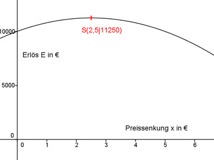

Aufgabe 115 Eine Firma verkauft monatlich 1 000 Bauteile für 10 €/Stück. Eine Marktanalyse hat ergeben, dass sie 20 Bauteile pro Monat mehr verkaufen kann, wenn der Stückpreis um 0,1 € sinkt. (40 Bauteile bei 0,2 €/Stück usw.) Bei welcher Preissenkung sind die Einnahmen am größten? Sinkt der Stückpreis um 0,1 €, kann man 20 Stück mehr verkaufen. Sinkt er um 0,2 €, kann man 40 Stück mehr verkaufen. Sinkt er um 1 €, kann man 200 Stück mehr verkaufen. Preissenkung sei x in €. Die zusätzlich verkaufte Menge ist x * 200 Verkaufsmenge nach einer Preissenkung: 1 000 + x * 200 Stückpreis nach einer Preissenkung = 10 € - x € Erlös E(x) = Verkaufsmenge * Stückpreis nach Preissenkung: E(x) = (1000 + x * 200)(10 - x) E(x) = 10 000 - 1 000 * x + 2000 * x - 200 *x2 E(x) = - 200x2 + 1000x + 10000 Dies ist die Funktionsgleichung einer nach unten geöffneten, gestreckten Parabel, deren höchster Punkt der Scheitelpunkt ist. E(x) = - 200x2 + 1000x + 10000 |:(-200) E(x) - ------ = x2 - 5x - 50 200 Quadratische Ergänzung: E(x) - ------ = x2 - 5x + 6,25 - 6,25 - 50 200 mit x2 - 5x + 6,25 = (x - 2,5)2 E(x) - ------ = (x - 2,5)2 -56,25 |*(-200) 200 E(x) = -200(x - 2,5)2 + 11 250 Scheitelpunkt abgelesen: S(2,5|11 250) Die Scheitelpunktkoordinaten bedeuten: Ist die Preissenkung x = 2,5 €, entsteht der größte Erlös E = 11 250 €. 